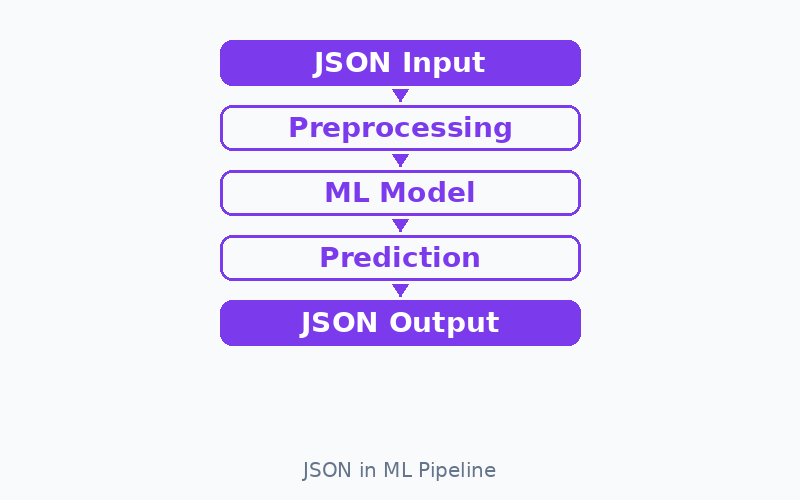

JSON в машинном обучении
Почему ML использует JSON
Машинное обучение — это не только алгоритмы и модели. Большая часть работы связана с передачей данных между компонентами системы: загрузка конфигураций, отправка запросов к API, сохранение результатов экспериментов. JSON стал стандартным форматом для этих задач, потому что он прост, читаем и поддерживается всеми языками программирования.
Области применения JSON в ML
JSON встречается на каждом этапе работы с ML-системой. Вот основные области:
1. Конфигурация моделей
Гиперпараметры модели удобно хранить в JSON-файле. Это позволяет менять настройки без изменения кода.
{
"model": "XGBoost",
"params": {
"max_depth": 6,
"learning_rate": 0.1,
"n_estimators": 300,
"objective": "binary:logistic"
}
}2. Метаданные экспериментов
После обучения модели результаты и условия эксперимента сохраняются в JSON для воспроизводимости.
{
"experiment_id": "exp_042",
"date": "2025-01-15",
"dataset": "customer_churn_v3",
"metrics": {
"accuracy": 0.94,
"f1_score": 0.91,
"auc_roc": 0.97
},
"training_time_sec": 124
}3. Обмен данными через API
Когда ML-модель развёрнута как сервис, клиенты отправляют данные и получают предсказания в формате JSON.
{
"request": {"age": 35, "income": 62000},
"response": {"prediction": 1, "probability": 0.89}
}4. Описание датасетов
Метаинформация о датасете — количество записей, список признаков, типы данных — часто хранится в JSON.
{
"dataset_name": "airline_satisfaction",
"num_records": 25976,
"features": ["age", "flight_distance", "seat_comfort"],
"target": "satisfaction"
}5. Результаты предсказаний
Модель возвращает предсказания в JSON, включая класс, вероятности и дополнительную информацию.
{
"input_id": 1047,
"prediction": "satisfied",
"probabilities": {
"satisfied": 0.87,
"neutral_or_dissatisfied": 0.13
}
}Визуализация

Общая схема использования JSON в ML
JSON присутствует на каждом этапе ML-процесса:
Сводная таблица применений
| Область | Что хранится в JSON | Пример |
|---|---|---|
| Конфигурация | Гиперпараметры модели | max_depth, learning_rate |
| Эксперименты | Метрики, дата, версия | accuracy, f1_score |
| API | Запросы и ответы | Признаки → предсказание |
| Датасеты | Метаданные | Список признаков, размер |
| Результаты | Предсказания модели | Класс, вероятности |
Видео: JSON и данные
В этом видео рассказывается о формате JSON и его использовании для обмена данными: